TRACKED ULTRASOUND / INTERACTIVE LAB
Ultrasound, reconstructed.
From a recorded sweep to a surface you can explore. Every frame in context. Explore the project anatomy ↗
02 sweeps04 full-sweep surfaces
Cortical surface
A reconstruction of predicted visible cortical echoes. It represents observed surfaces, not a filled anatomical bone.
STLExplore the sequence
64 display frames · sweep 192514
PROJECT ANATOMY
From an echo to a surface.
A cutaway view of the project. Follow a real frame through acquisition, segmentation and spatial reconstruction.

Acquire a tracked sweep
Each B-mode image is paired with a recorded robot pose. Spatial calibration locates its image plane relative to the tool.
Original pixels, frame ID and timestamp stay together.
- Original frame
- 000304
- Relative time
- —
- Cortex pixels
- —
- Fixed cutoff
- p > 0.50
The explorer compares both matrices. This illustration follows Matrix 1; choose a single calibration to follow it in both views.
Blue shows recorded image planes; green shows predicted cortex. The instrument is schematic, and echo marks are drawn sparsely for clarity. Both matrices share the same display scale. Inspect the full-sweep mesh in the explorer.
Illustrated with Anatomy ↗